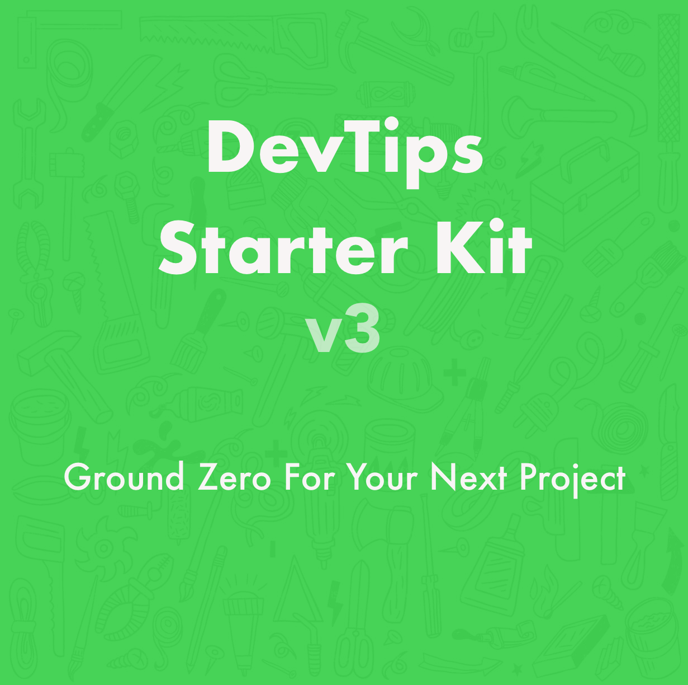

<!DOCTYPE html>
<html lang="en"></html>
<head>
  <title>DevTips Starter Kit</title>
  <meta charset="UTF-8"/>
  <meta name="viewport" content="width=device-width, initial-scale=1"/>
  <link rel="shortcut icon" href="./assets/img/favicons/favicon.ico"/>
  <link rel="stylesheet" href="assets/css/main.css"/>
</head>
<body>
  <div class="page-home">
    <section>
      <h1 class="page-title">DevTips<br>Starter Kit </h1>
      <p>Ground zero for your next project. eine update von dev-tips Starter Kit. </p><a class="button button-download" href="https://github.com/devtips/devtips-starter-kit/archive/master.zip">Download Now</a><a class="fork-tag" href="https://github.com/DevTips/DevTips-Starter-Kit">Fork Me on GitHub</a>
    </section>
    <section>
      <article>
        <h4>Update from Travis Neilson Devtips Starter Kit</h4>
        <p>Tnn Travis Neilson Devtips Starter Kit</p>
        <div class="name-lockup">
          <div class="name"><strong>Travis Neilson</strong><br/></div>
        </div>
      </article>
    </section>
    <pre>DevTips-Starter-Kit
| -- assets/
|   | -- css/
|   |   | -- 1-tools/
|   |   |   | -- bourbon/
|   |   |   | -- fonts.sass
|   |   |   | -- normalize.sass
|   |   |   | -- vars.sass
|   |   | -- 2-basics/
|   |   |   | -- body-elements.sass
|   |   |   | -- links.sass
|   |   |   | -- selection-colors.sass
|   |   |   | -- typography.sass
|   |   | -- 3-modules/
|   |   |   | -- example-module.sass
|   |   |   | -- example-module.sass
|   |   | -- 4-pages/
|   |   |   | -- example-page.sass
|   |   | -- main.sass
|   | -- js/
|   |   | -- jquery.js
|   |   | -- functions.js
|   | -- img/
| -- favicon.ico
| -- readme.md
| -- index.html</pre>
  </div>
  <script src="./vendors/jquery/dist/jquery.min.js"></script>
  <script src="./assets/js/app.js"></script>
</body>